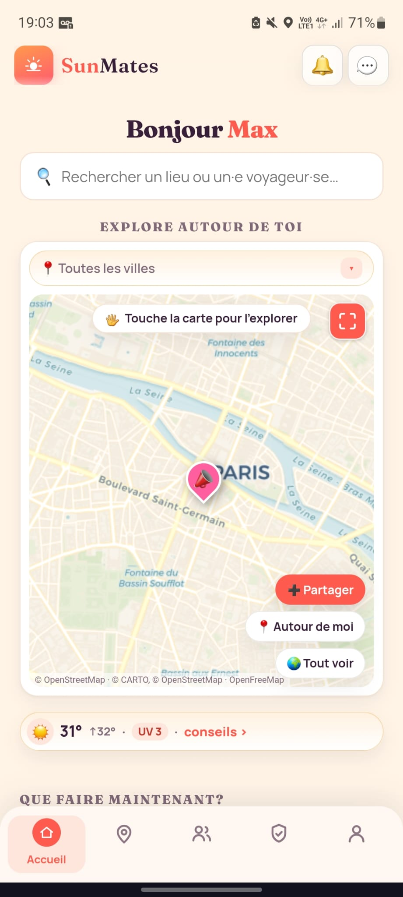
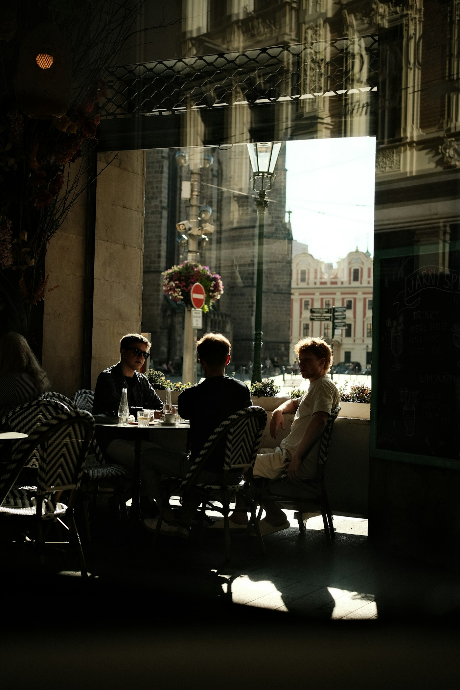
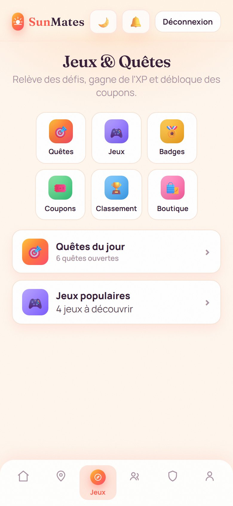

Le voyage en solo a enfin du monde dedans.
L'appli pour les gens qui partent seuls et finissent rarement leur soirée comme ça.

Qui traîne dans le coin.
On te montre les autres voyageurs à portée de café. Tu fais le premier pas, ou pas. Aucune pression.
- En direct, autour de toiLa carte révèle qui voyage et quels lieux bougent à deux rues. Lance ta journée, croise du monde.
- Des affinités, pas du hasardMêmes centres d'intérêt, même façon de voyager, mêmes langues. Tu repères vite ceux qui te ressemblent.
- Un score de confiance, pas un likeL'appli te dit qui est dans le coin, pas qui est célibataire. Profils vérifiés, check-ins, recommandations.
Ça continue après le check-out.
Les soirées finissent, les groupes restent. La prochaine escale aussi se prépare à plusieurs.
Des prétextes pour sortir, surtout.
Officiellement, c'est une appli de voyage. Officieusement, une collection d'excuses pour dire bonjour.
Les bons endroits, sans le guide qui parle trop.
Les coins où ça se passe vraiment, repérés par des gens qui y étaient hier. Tu check-ines sur place, et la carte se remplit.

Pose ton sac où c'est bon.
Voyager devient un terrain de jeu.
Quêtes solo ou à plusieurs, XP, 22 emblèmes faits main. Une excuse de plus pour sortir, et voir qui est là.
FR / EN, hors-ligne
Toute l'appli dans les deux langues, même quand le réseau te lâche.
Un geste, et quelqu'un répond
Partage ta position avec ton cercle de confiance, quand tu veux. Toi seul·e décides qui voit quoi.
Chaque ville, une aventure.

Seul·e au départ, jamais à l'arrivée.
L'appel de l'horizon
Ce matin où la routine pèse trop, et où le billet devient une évidence. Tu n'attends plus personne pour partir.
Un sourire, et tout bascule
Une terrasse, deux cafés, une langue qu'on bricole. La première personne qui devient un repère.
Une bande, née en route
Des fous rires qu'on n'explique pas, et l'envie de continuer le voyage ensemble.
Le voyage, à hauteur d'amitié.

On vous laisse lire la suite.
Partie seule à Lisbonne, rentrée avec un groupe WhatsApp encore actif six mois après. Je sais toujours pas comment.
J'avais prévu un musée. J'ai fini sur un toit avec trois inconnus et une guitare désaccordée. Aucun regret.
Premier voyage solo, je flippais un peu. Au final j'ai surtout flippé de devoir rentrer.
À mon âge on se fait plus d'amis, paraît-il. Quelqu'un a oublié de prévenir SunMates.
Je voulais juste savoir où boire un verre correct. Repartie avec une coloc de vacances et un nouvel apéro préféré.
L'appli te dit qui est dans le coin, pas qui est célibataire. Franchement, reposant.
Ta place est déjà gardée.
Télécharge, arrive seul·e, et vois ce que la ville a prévu pour toi.
Réserve ta placeUne bande de voyageurs, pas une multinationale.
SunMates est un projet indépendant, fait main, pensé pour que personne ne voyage seul sans le vouloir. Une question, une idée, un bug à signaler ? Écris-nous, on répond pour de vrai.